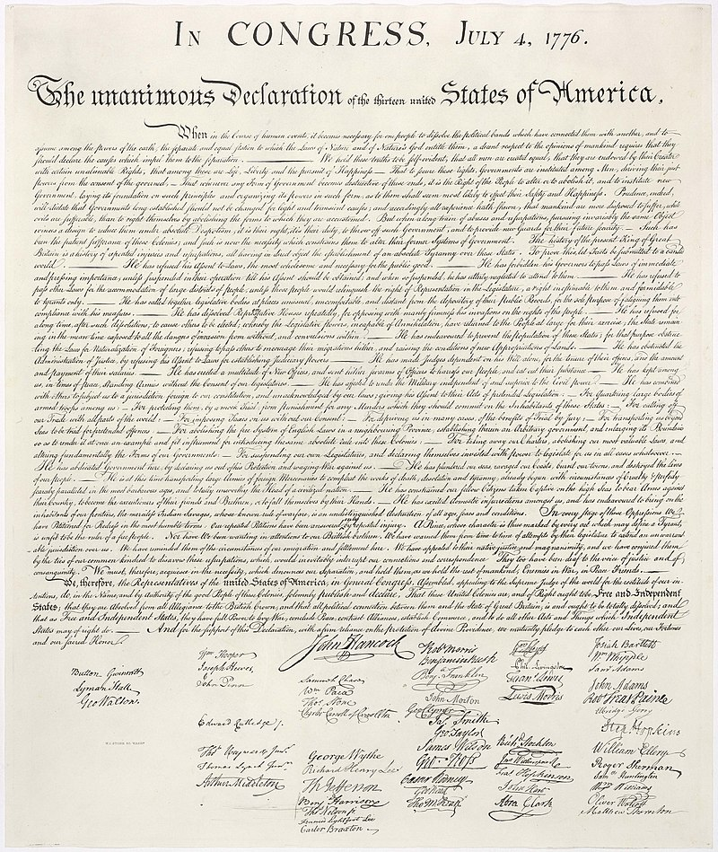
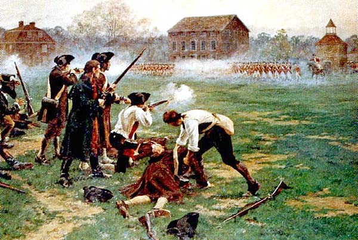
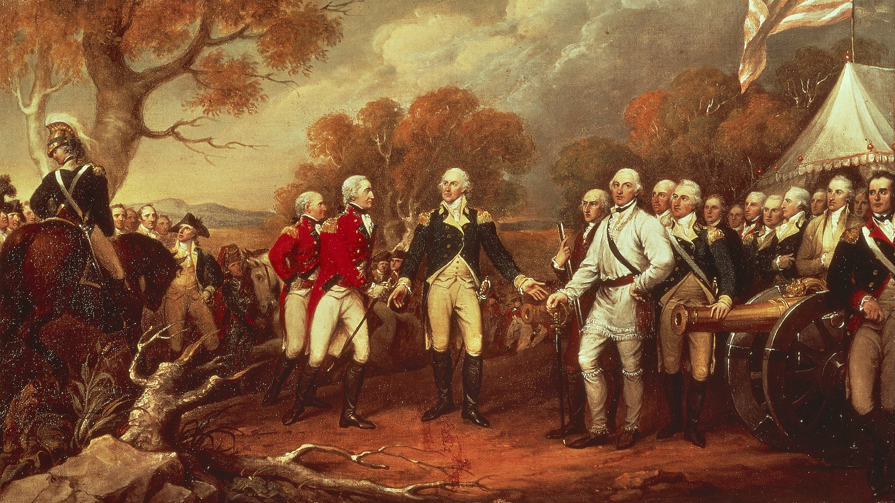
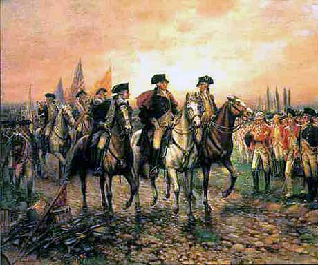
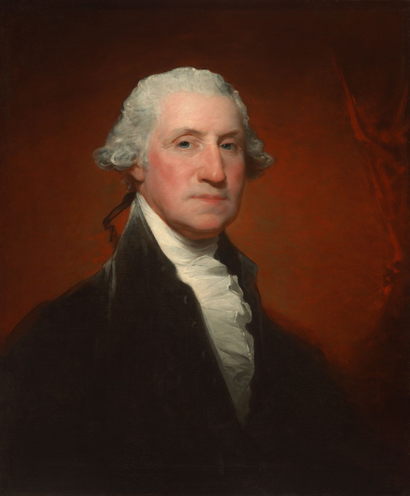

| The American Revolutionary War, also known as the Revolutionary War or American War of Independence, was the military conflict of the American Revolution in which American Patriot forces under George Washington's command defeated the British, establishing and securing the independence of the United States. | The Battles of Lexington and Concord, fought on April 19, 1775, kicked off the American Revolutionary War. Tensions were building for years between the American colonies and the British authorities. On April 18, 1775, British troops marched from Boston to Concord to seize an arms cache. Paul Revere and other riders sounded the alarm, and colonial militiamen began mobilizing. A confrontation in Lexington started off the fighting, and the British were retreating under intense fire. | The Battle of Saratoga occurred in September and October, 1777, during the second year of the American Revolution. It included two crucial battles, fought eighteen days apart, and was a decisive victory for the Continental Army and a crucial turning point in the Revolutionary War. | British General Lord Charles Cornwallis and his army surrendered to General George Washington's American force and its French allies at the Battle of Yorktown on October 19, 1781. The outcome in Yorktown, Virginia marked the conclusion of the last major battle of the American Revolution and the start of a new nation's independence. It also cemented Washington's reputation as a great leader and eventual election as first president of the United States. |
Important people...
|
|  |  |  |  |  |